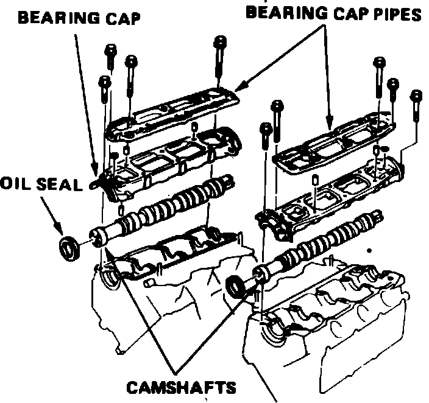
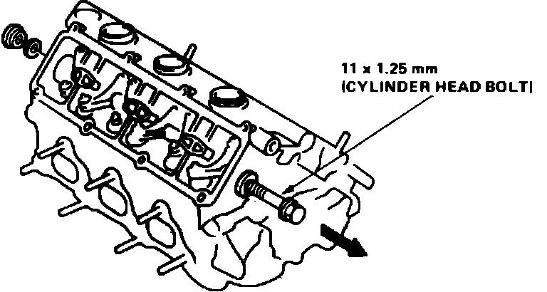
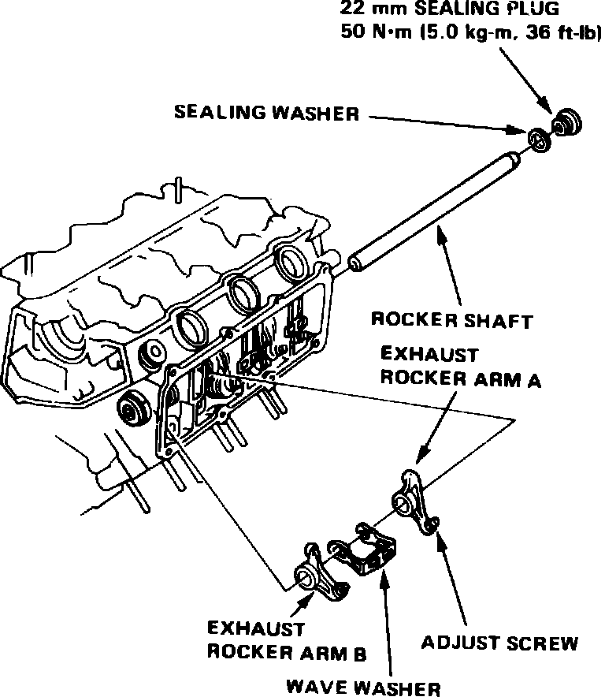
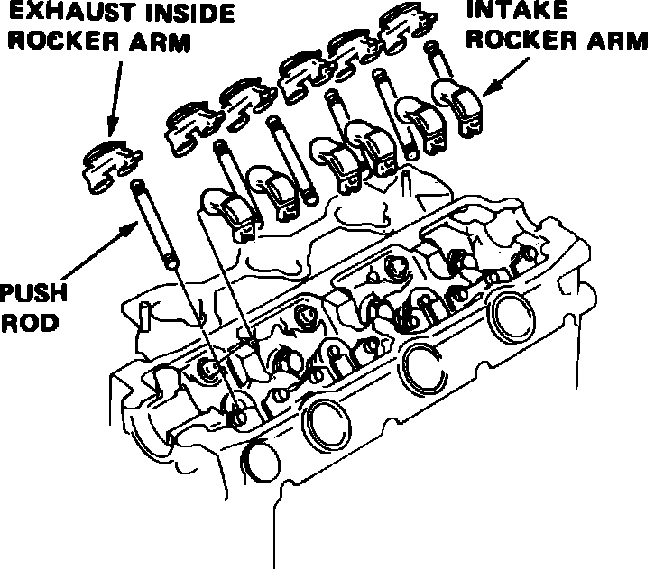
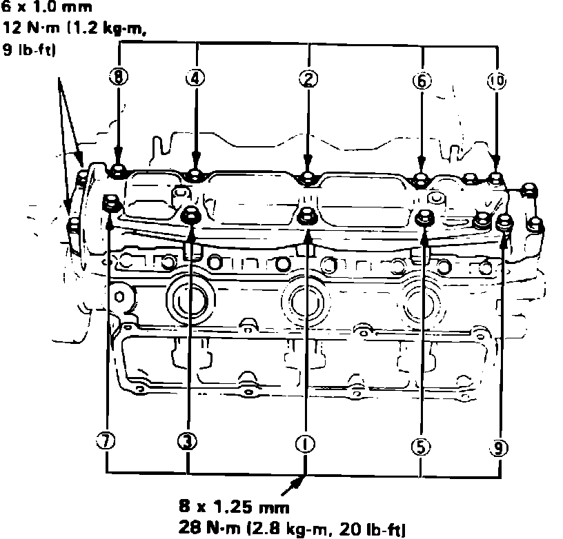

Rocker Arm Assembly: Service and Repair
Fig. 1 Relieving fuel system pressure:

Fig. 11 Bearing cap & camshaft removal:

Fig. 16 Exhaust rocker arm shaft removal. Legend:

1. Disconnect battery ground cable, drain cooling system, then position No. 1 cylinder at TDC compression stroke.
2. Disconnect brake booster vacuum tube from intake manifold.
3. Remove engine secondary ground cable from cylinder head and transaxle housing.
4. Disconnect radio condenser electrical connector, ignition coil wire and ignition primary connector.
5. Remove air cleaner cover.
6. Relieve fuel system pressure by loosening the service bolt on top of fuel filter, Fig. 1, one complete revolution, then disconnect fuel lines from filter.
7. Disconnect throttle cable from throttle body and the charcoal canister hose from throttle valve.
8. Disconnect engine sub-harness connectors and couplers from cylinder head and intake manifold.
9. Disconnect oxygen sensor electrical connector.
10. Disconnect upper radiator hose, heater inlet hose and bypass inlet hose from cylinder head.
11. Remove coolant hose between intake manifold and water passage.
12. Disconnect connecting pipe to valve body hose and bypass outlet hose.
13. Disconnect ignition wires from spark plugs, then remove distributor assembly.
14. Remove intake manifold cover, wire harness cover and alternator pulley cover.
15. Remove alternator and alternator drive belt.
16. Remove power steering pump and disconnect pump hoses.
17. On models equipped with A/C, disconnect idle control solenoid hoses.
18. On models equipped with cruise control, remove cruise control actuator.
19. On all models, remove exhaust pipe header nuts, then disconnect header pipes from manifolds.
20. Remove air cleaner case attaching bolts, then disconnect hose between intake manifold and breather chamber.
21. Remove air cleaner case from intake manifold.
22. Remove EGR tube nuts from cylinder head, then the exhaust manifold cover nuts.
23. Remove air suction tube nuts from exhaust manifold and air suction valve.
24. Remove intake manifold from cylinder head.
25. Remove water passage assembly from front and rear cylinder heads.
26. Remove timing belt upper covers, then loosen tension bolt and remove timing belt. Advance crankshaft approximately 15° prior to removing timing belt to prevent interference between valve and piston. Do not bend or crimp timing belt more than 90° or to less than 1 inch in diameter.
27. Position cam so that no valve is fully open, then remove front and rear pulley attaching bolts and the pulleys. On the rear pulley, remove top two bolts first, then the remaining bolt.
28. Remove upper cover back plates, then the valve covers and head side covers.
29. Remove bearing cap pipes, bearing caps and camshafts, Fig. 11.
30. Remove intake and exhaust inside rocker arms and push rods.
31. Remove exhaust rocker arm assembly as follows:
a. Remove rocker shaft sealing bolt from transaxle side of cylinder head and install a long 11 x 1.25 mm (12 x 1.25 mm on 2.7L engine) bolt to the rocker shaft.
b. Remove rocker shaft, rocker arms and wave washers using installed bolt, Fig. 16.
Fig. 17 Exhaust rocker arm installation. Legend:

32. Install exhaust rocker arm assembly as follows:
a. Apply clean engine oil to rocker shaft mounting surfaces.
b. Tap rocker arm shaft into position from transaxle side, then install rocker arms and wave washers, Fig. 17. Ensure wave washers are fully seated in cylinder head groove.
c. Fully insert rocker shaft, then install sealing plug and torque to 36 ft. lbs. (33 ft. lbs on 2.7L engine).
33. If lifters were removed, pour engine oil into lifter bores up to level of oil path, then install lifters into cylinder head without rotating. Pour oil into oil filler holes in cylinder head.
Fig. 18 Exhaust inside rocker arm & intake rocker arm installation. Legend:

34. Install push rods, then the exhaust inside rocker arm and intake rocker arms, Fig. 18.
35. Install camshafts and camshaft oil seals, noting the following:
a. Ensure camshaft in front position has a groove for driving the distributor.
b. Ensure camshaft is positioned parallel with rocker arm slipper surface.
c. To prevent interference between piston and valve, advance crankshaft by 15° from TDC of compression stroke on cylinder No. 1.
d. Position camshaft in rear position on cylinder head so cam is not pushing the valve.
e. Position oil seals with spring side facing inward.
f. Do not lubricate cam holder side of oil seal.
36. Apply suitable sealant to oil seal mounting surface and on head contact surface, then install and temporarily tighten bearing caps.
Fig. 19 Camshaft bearing cap bolt torque sequence. Legend:

37. Install camshaft oil seal until it contacts bearing cap, then torque attaching bolts to specifications in sequence, Fig. 19. Torque 6 mm bolts last.
38. Install timing belt upper cover plate, then the camshaft pulleys.